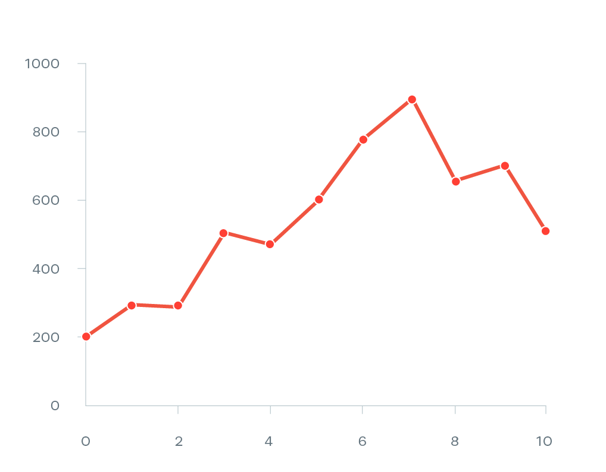

Tomado de: Data Viz Catalogue
Line Chart
El gráfico de líneas tiene sus raíces en el siglo XVIII, cuando
comenzó a usarse para representar visualmente datos numéricos a lo
largo del tiempo. Fue el escocés
William Playfair quien popularizó esta técnica en
1786, al incluirla en su obra
The Commercial and Political Atlas, considerada una de las primeras publicaciones en utilizar
gráficos estadísticos para mostrar información económica. En esta
obra, Playfair representó series temporales como las exportaciones
e importaciones del Reino Unido mediante líneas conectadas,
permitiendo observar tendencias y comparaciones de forma
intuitiva.
Funcionamiento
Consiste en representar puntos de datos cuantitativos conectados
por líneas, generalmente a lo largo de un eje temporal. Cada línea
representa una serie o categoría. El gráfico permite seguir la
evolución de los valores y detectar tendencias, patrones,
estacionalidades o cambios significativos a lo largo del tiempo.
Ventajas
Claridad para mostrar tendencias, fácil de interpretar, útil para
comparar series en el tiempo.
Ver más...
Desventajas y limitaciones
Poco útil para datos no ordenados, puede saturarse con muchas
series, depende del diseño de los ejes.
Ver más...
Tipos de datos: Cuantitativos continuos u ordenados
(especialmente series temporales)
Ejemplos: Evolución del PIB por país, Temperatura
media anual por ciudad, Índices bursátiles o precios históricos,
Casos de enfermedades por mes, Tráfico web por día entre otros.
Aplicaciones: Economía, salud, medio ambiente,
analítica web, demografía entre otros.